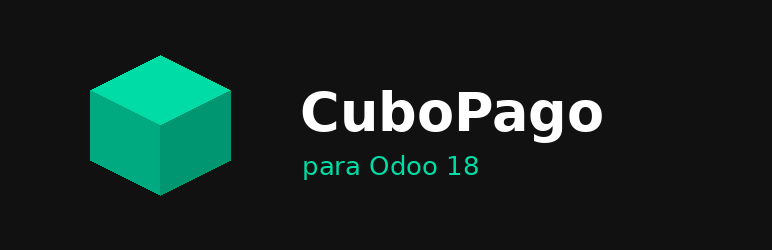

Integra la pasarela CuboPago con el comercio electrónico de Odoo 18 usando la arquitectura nativa de proveedores de pago. Al pagar, el cliente es enviado a la pantalla segura de CuboPago mediante un link de pago, y el pedido se confirma automáticamente en Odoo cuando el pago es aprobado.
Selector de entorno con API Key y URL base configurables por entorno, ligado al modo de prueba del proveedor en Odoo.
Cada webhook se valida volviendo a consultar la transacción contra la API de CuboPago antes de confirmar el pago, evitando notificaciones falsas.
Envío opcional del detalle de productos del pedido y de los datos del cliente para un checkout más claro.
Soporte para aplicar un plan de meses sin intereses mediante su identificador.
payment y website_sale instalados.Nota: por contener código Python, este módulo está pensado para instalaciones on-premise u Odoo.sh; no es compatible con Odoo Online (SaaS).
Soporte de configuración y corrección de errores para clientes con licencia válida. Escríbenos a ph03001gnu@yahoo.com.
© 2026 Carlos Palacios · Distribuido bajo Odoo Proprietary License v1.0 (OPL-1).